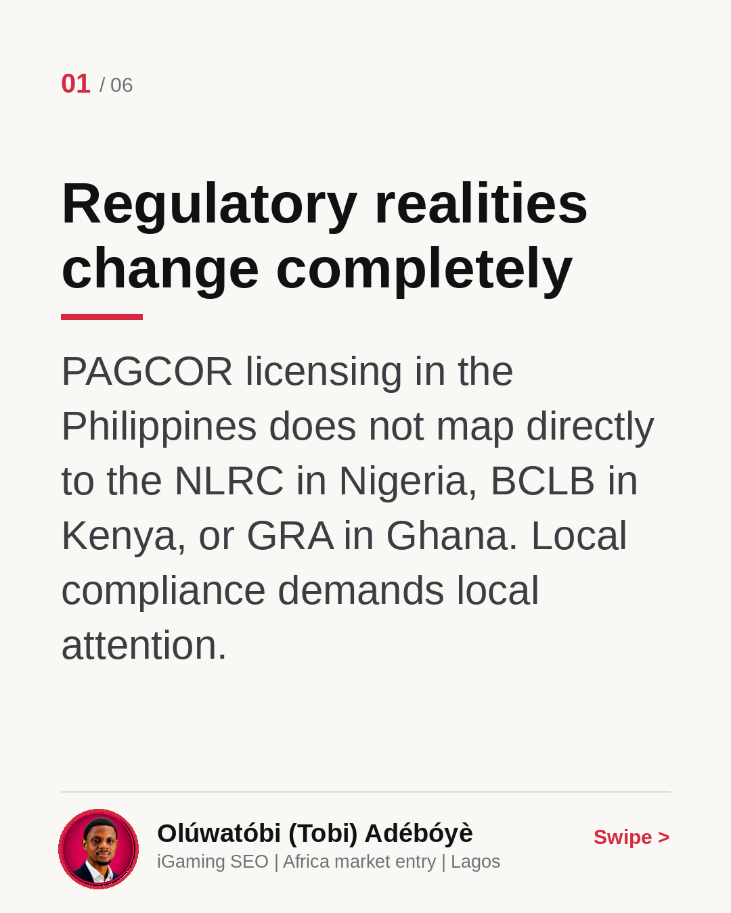
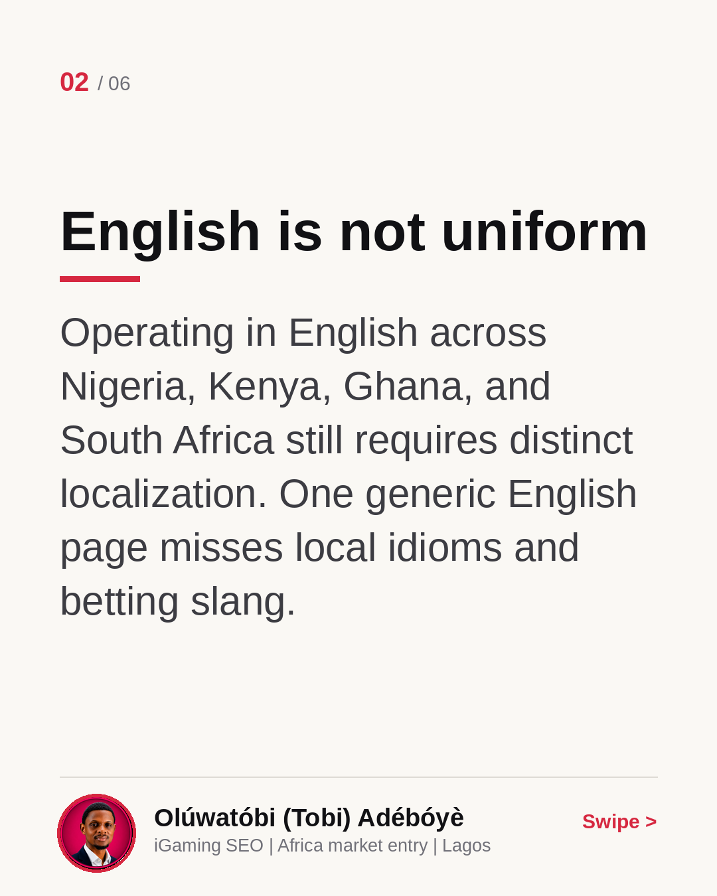
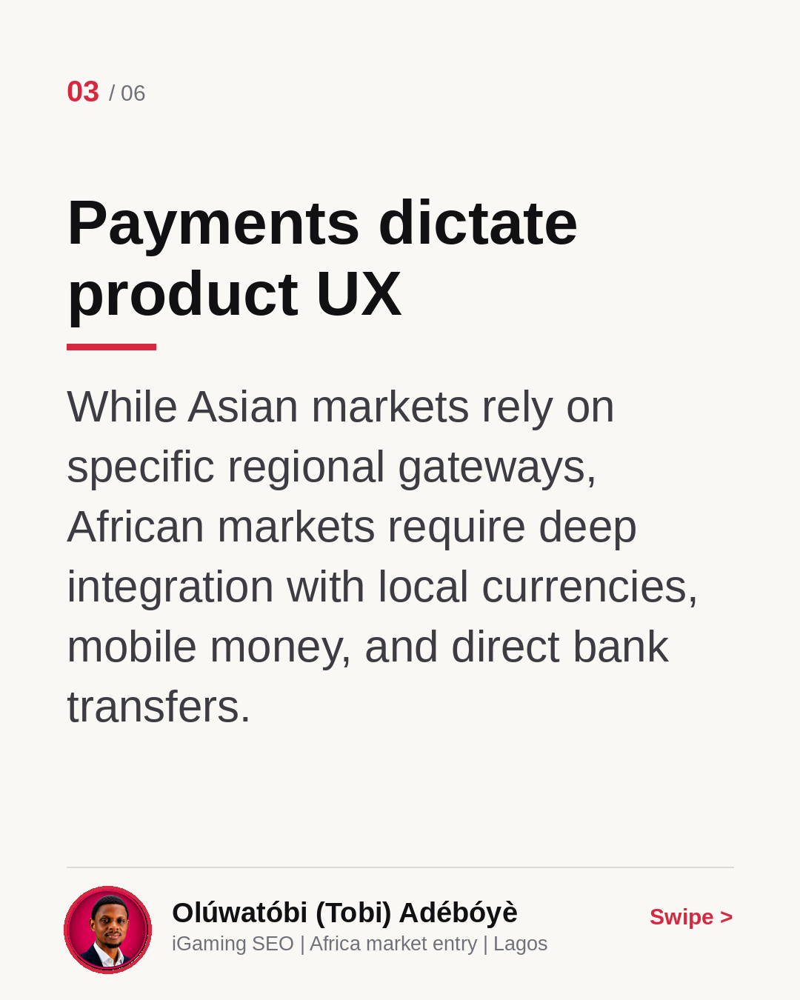
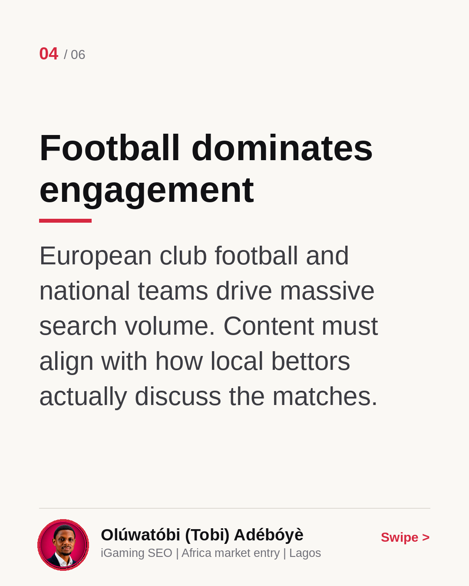
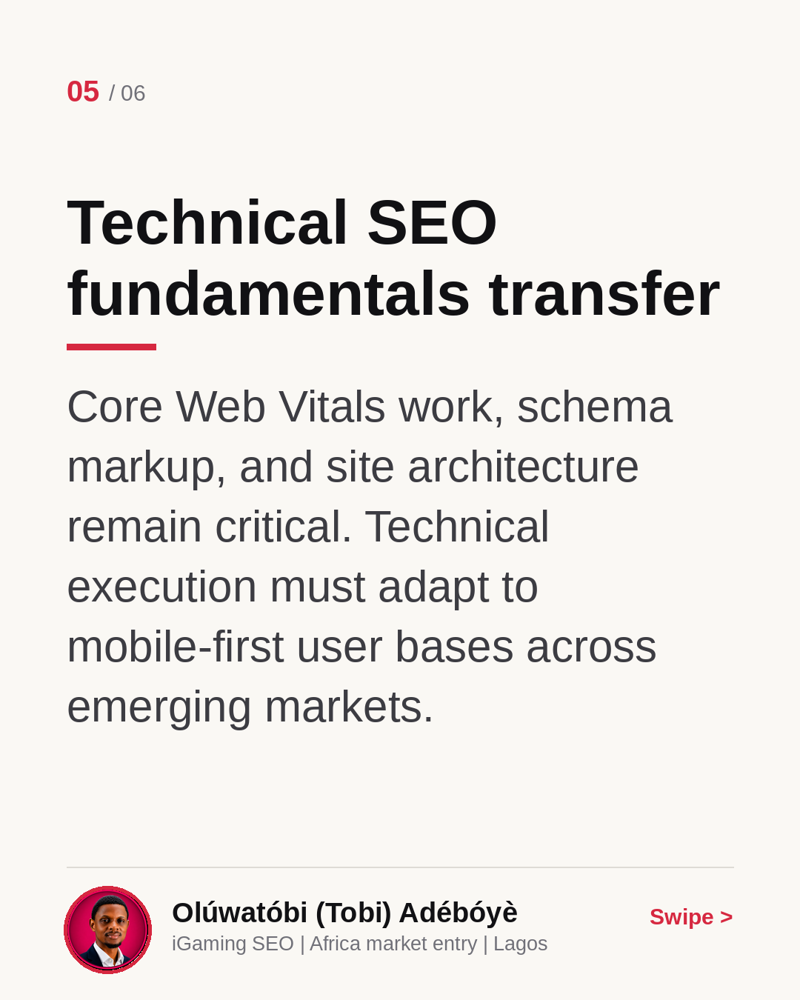
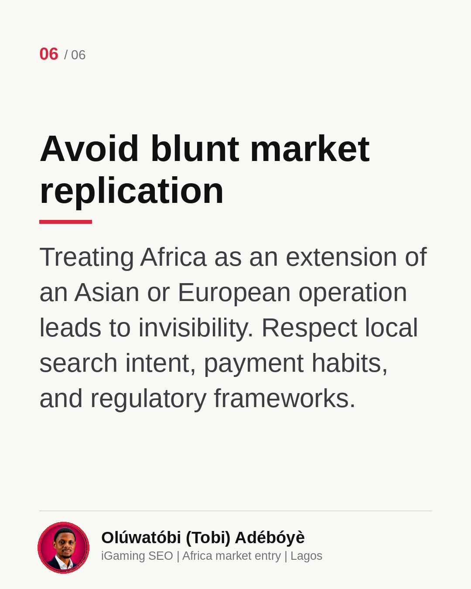

Expanding from Asia to Africa
Operators expanding from the Philippines or Europe into Africa often assume strategies transfer easily. They do not. Regulatory bodies like the NLRC, BCLB, and GRA require distinct approaches, and localized payment habits and search intent mean you must rebuild your technical and content strategy from the ground up. Read this carousel for what transfers and what must change, then let me know: what is your biggest concern when entering a new regional market?
Regulatory realities change completely
PAGCOR licensing in the Philippines does not map directly to the NLRC in Nigeria, BCLB in Kenya, or GRA in Ghana. Local compliance demands local attention.

English is not uniform
Operating in English across Nigeria, Kenya, Ghana, and South Africa still requires distinct localization. One generic English page misses local idioms and betting slang.

Payments dictate product UX
While Asian markets rely on specific regional gateways, African markets require deep integration with local currencies, mobile money, and direct bank transfers.

Football dominates engagement
European club football and national teams drive massive search volume. Content must align with how local bettors actually discuss the matches.

Technical SEO fundamentals transfer
Core Web Vitals work, schema markup, and site architecture remain critical. Technical execution must adapt to mobile-first user bases across emerging markets.

Avoid blunt market replication
Treating Africa as an extension of an Asian or European operation leads to invisibility. Respect local search intent, payment habits, and regulatory frameworks.
